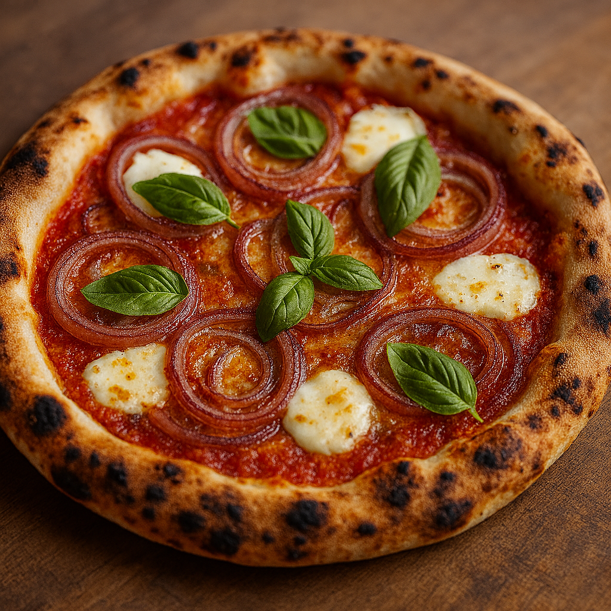

Dolce Tropea
Pomodoro San Marzano DOP, fior di latte, tonno pinnagialla del Mediterraneo, cipolla di Tropea IGP caramellata al balsamico.
€9,00
Pomodoro San Marzano DOP, fior di latte, tonno pinnagialla del Mediterraneo, cipolla di Tropea IGP caramellata al balsamico.
Pomodoro San Marzano DOP, fior di latte, prosciutto cotto Alta Qualità, funghi misti del Baldo trifolati al timo, Brie francese DOP.
Pomodoro San Marzano DOP, aglio fresco, acciughe del Cantabrico, olive taggiasche, origano di Pantelleria.
Pomodoro San Marzano DOP, fior di latte, crema di formaggio fresco, prosciutto crudo di Parma 24 mesi.